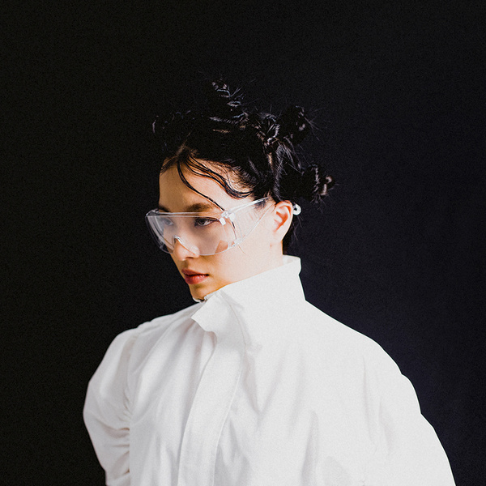

모든 이는 '흠 (Flaw)'을 갖는다.
그러나 모든 이들은 그러한 '모든 이'가 되는 것을 겁
내더라. 그들은 정상, 보통이 될 수 있는 기준을 만들
고, 그 기준에 맞지 않는 흠은 서로에게 감추고 고치
치라며 강요한다. 사람이 사람으로서 갖는 자연스러
운 흠, 이 자연스러움을 안아주지 못하는 것. 나는
그것에 대해 일말의 화(火)를 가지고 있었다. 이 작
업은 그러한 ‘화’에서 시작되었고, 모든 이가 갖고
있는 흠 중에서도 오롯이 내가 지니고 있는 그 흠들
을 말하고픈 마음에서 만들어졌다. 앨범 [Flaw,
Flaw]는 선명한 현실에 지친 내가 흠이 있는 물건
만을 챙겨서 떠나는 하나의 '여행'을 주제로 한다. 흠
을 안고 떠나는 여행, 나는 그 여행에서 온전히 나를
안아주는 누군가를 만나 함께한다. 그러나 동시에
그 완벽한 동행자와의 관계 속에서 마저도 온전한
'나'로 살아갈 수 없음을 어려워한다. 결핍으로 가득
찬 나는 옳은 것, 그른 것에 대한 기준을 모두 상실
한 채로 나와 같은 언어를 지닌 사람들과 살아가기
로 한다.사랑스러운 사람들. 그 사람들과 함께 오롯
이 사랑의 감정만이 남을 수 있는 세상을 구축하고
싶었던 나는 아이러니 하게도 유토피아 대신 허무함
이 가득한 종말 직전을 떠올릴 뿐이었다. 이 여행의
이야기는 내가 갖고 있는 흠, 오롯이 그 자체의 상
(像)과 그것이 흔들리며 그려내는 서사이다.
그러나 모든 이들은 그러한 '모든 이'가 되는 것을 겁
내더라. 그들은 정상, 보통이 될 수 있는 기준을 만들
고, 그 기준에 맞지 않는 흠은 서로에게 감추고 고치
치라며 강요한다. 사람이 사람으로서 갖는 자연스러
운 흠, 이 자연스러움을 안아주지 못하는 것. 나는
그것에 대해 일말의 화(火)를 가지고 있었다. 이 작
업은 그러한 ‘화’에서 시작되었고, 모든 이가 갖고
있는 흠 중에서도 오롯이 내가 지니고 있는 그 흠들
을 말하고픈 마음에서 만들어졌다. 앨범 [Flaw,
Flaw]는 선명한 현실에 지친 내가 흠이 있는 물건
만을 챙겨서 떠나는 하나의 '여행'을 주제로 한다. 흠
을 안고 떠나는 여행, 나는 그 여행에서 온전히 나를
안아주는 누군가를 만나 함께한다. 그러나 동시에
그 완벽한 동행자와의 관계 속에서 마저도 온전한
'나'로 살아갈 수 없음을 어려워한다. 결핍으로 가득
찬 나는 옳은 것, 그른 것에 대한 기준을 모두 상실
한 채로 나와 같은 언어를 지닌 사람들과 살아가기
로 한다.사랑스러운 사람들. 그 사람들과 함께 오롯
이 사랑의 감정만이 남을 수 있는 세상을 구축하고
싶었던 나는 아이러니 하게도 유토피아 대신 허무함
이 가득한 종말 직전을 떠올릴 뿐이었다. 이 여행의
이야기는 내가 갖고 있는 흠, 오롯이 그 자체의 상
(像)과 그것이 흔들리며 그려내는 서사이다.

나와 가줄래?

해먹에 올라
그물 자리를 흔들어 대면
나를 축으로 세상이 돌아
나를 위해 쓴 적이 없는 눈은
오롯이 내 것 같아
너와 난 현실을 지내지만
산 적 없지 현재를
취기는 잘 떠오르게 할 테지
나와 너의 공통점을
허나 난 뭔가에 취해
생기는 연에 매인 적이 없지
그저 나는 아까워 취하기를
기다리는 찰나의 순간도
우울을 숨기지 않아도 되는 세상이지 감긴 눈이 떠져 내일이 아무렇지도 않게 오면 어떡하지란 생각은 끔찍 약삭이 빠르게 해마의 어딘가에서 숨바꼭질 현실엔 청진기가 없는 의사 돌팔이 네 말은 들어볼 맘이 없이 정의를 내리는 일에만 크게 기뻐하는것 같이 진단을 해대지만 네게는 오히려 해롭지 그건 다 Blah blah 때문 같아 또는 네건 가짜고 나의 것이 진짜 네 Depression 은 멋진 (으악) fashion 같아 자주 상상하는 Suicide 는 힙스터의 조건 난 감히 너가 앓는 우울에 관해 무례하게 굴지 않을게 입은 닫고 귀는 열어 둘게 함부로 너의 상처의 깊이를 가늠한다 말하지 않을게 탓하지 않을게 고민이 없는 채로 쉬이 입에 이해를 올리지 않을게 느낄수 없는 세상의 아름다움에 대해 말하지 않을게 난 감히 너의 의미가 되려는게 아냐 다만 나는 너의 예쁨을 알아봐 너는 흠을 네게서만 찾잖아